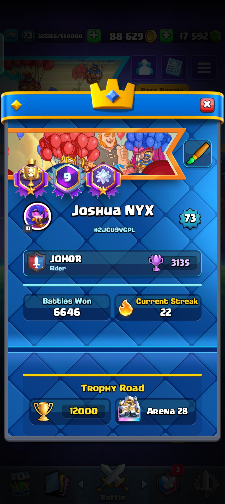
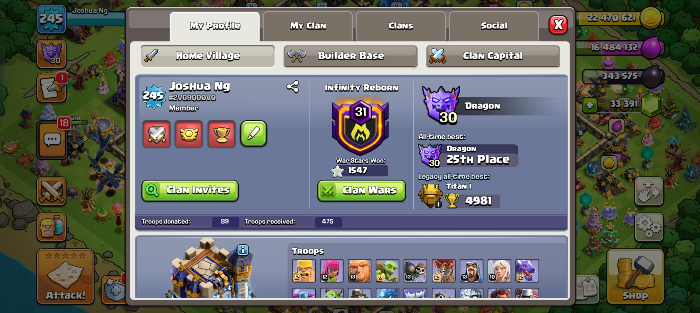
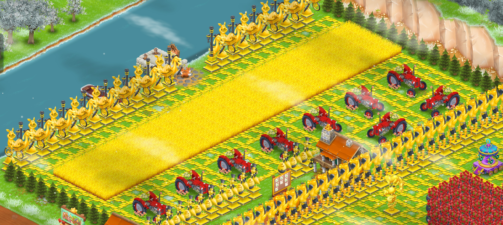
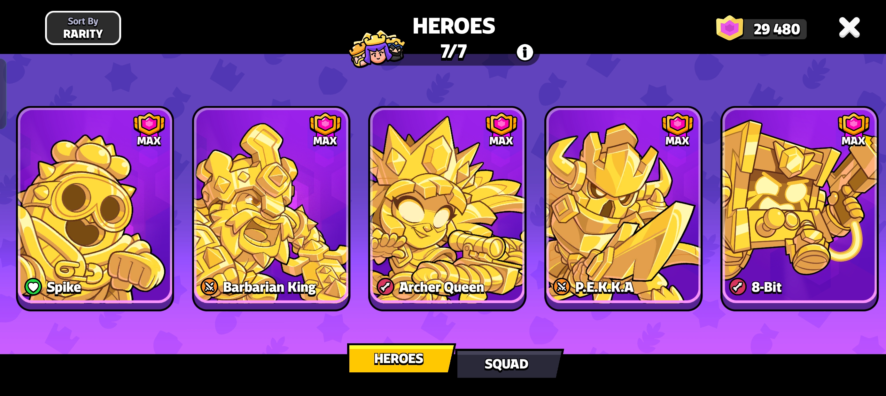
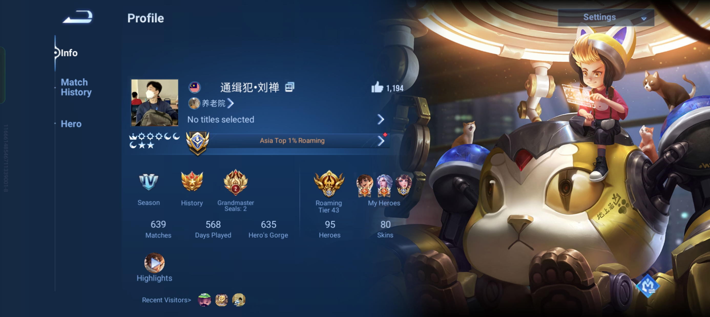
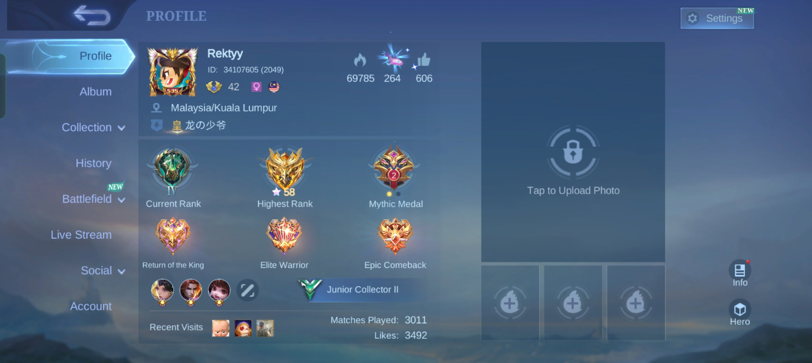
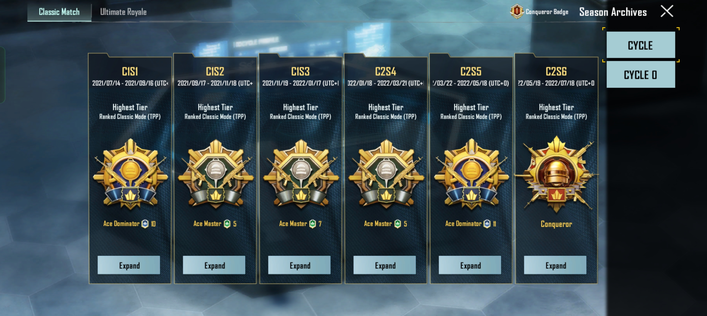

2023 · National record
Malaysia Book of Records
Completed 55 left-arm one-arm push-ups in one minute — evidence of long-term discipline, consistency and performance under pressure.
Hands-on infrastructure · Operational reliability · Technical support
Data Centre & Infrastructure Engineer
Data-centre and infrastructure engineer with hands-on experience deploying Dell PowerEdge servers and enterprise storage, supporting large data-centre migrations, configuring virtualisation platforms, and resolving customer-facing hardware, Windows, SQL and network faults.
Credibility layer
Three distinctions that signal discipline, leadership and the confidence to represent others.
Completed 55 left-arm one-arm push-ups in one minute — evidence of long-term discipline, consistency and performance under pressure.
Received the organisation's highest distinction after years of leadership, training, service and responsibility as a senior NCO.
Represented student perspectives, communicated across stakeholders and strengthened the leadership experience built as Student Union President and Graduation Speaker.
Career telemetry
Resume-backed indicators of deployment exposure, infrastructure scope and support effectiveness.
Professional experience
A progression from hands-on deployment and enterprise migration work to customer-facing troubleshooting in Ireland.
Everdish (Edish Limited) · Ireland
Supported EPOS operations across a 3,000+ customer base in Ireland and the UK, handling approximately 15 cases per day across phone, messaging and remote-support channels.
Problem solvingDiagnosed Windows, SQL database, EPOS, printer, network, storage/memory and connectivity faults, resolving approximately 95% without escalation.
Hands-on configurationInstalled EPOS applications, databases, kitchen and receipt printers, displays, cash drawers, caller-ID devices and multi-terminal setups.
Service disciplineRecorded symptoms, actions and outcomes in ClickUp, created reusable documentation and escalated complex cases with clear evidence.
Alaunus Sdn. Bhd. · Malaysia
Promoted after a three-month internship for rapid learning, ownership and deployment performance; supported 100+ combined projects, locations and data-centre sites.
Infrastructure deploymentDeployed and configured 200+ Dell PowerEdge servers plus PowerStore, ME and MD storage, including iDRAC, BIOS, RAID, firmware, IP addressing, zoning and provisioning.
Data-centre migrationSupported a 12-month Bank Rakyat migration involving 300+ assets across 100+ racks; completed power/PDU, cooling, rack-space and cabling surveys.
Delivery improvementHelped the team complete the final cutover in three days instead of five by clarifying ownership and reporting progress twice daily.
Virtualisation & recoveryInstalled and configured 50+ VMware ESXi and Microsoft Hyper-V hosts and supported snapshots, backup/rollback, firmware and root-cause recovery.
Alaunus Sdn. Bhd. · Malaysia
Built the practical foundation that led to promotion: rack-and-stack, Windows Server and hypervisor installation, VLAN/IP/port configuration, storage provisioning and hardware replacement.
Technical developmentCompleted 100+ Dell TechDirect technical training modules alongside live deployment work.
Quality focusWorked to build standards, verified installation outcomes and learned controlled handover practices.
Mi Na Rae Korean BBQ · Malaysia
Provided customer service in a fast-paced restaurant, communicated menu information clearly, coordinated with kitchen staff and maintained organised dining areas.
Capability matrix
No arbitrary proficiency bars — every capability is connected to actual deployment, support or project exposure.
Dell PowerEdge, PowerStore, ME/MD storage, iDRAC, BIOS, RAID 0/1/5/6, rack-and-stack, firmware and hardware replacement.
SAN, NAS, Fibre Channel, iSCSI, LUNs, zoning, replication, snapshots, VMware ESXi/vCenter and Microsoft Hyper-V.
Windows/Windows Server, VLANs, IP addressing, DNS/DHCP, switch and port configuration, fibre/copper cabling and remote support.
AWS EC2/Lambda, Docker, Kubernetes, CI/CD, Python, JavaScript, FastAPI, MongoDB, CouchDB and Git/GitHub.
Runbooks, port maps, backup/rollback planning, issue escalation, quality checks, customer guidance and cross-team coordination.
English, Mandarin and Cantonese fluency; advanced Bahasa Malaysia; experience with customers, engineers, students and community teams.
Retained as supplementary exposure rather than core résumé positioning.
Leadership & distinctions
Leadership developed through student representation, public speaking, disciplined service and team delivery.
Elected with 50+ votes to lead a seven-member committee representing 100+ students, manage a RM15,000 budget and deliver major student activities.
Selected for leadership, discipline and academic performance; addressed 200+ graduates and 400+ attendees.
Led committees and quarterly performance reviews, trained groups ranging from 5 to 80 members, and earned the Founder's Award.
Represented student perspectives and practised structured communication across academic stakeholders.
Preserved from the original portfolio.
Coordinated logistics, volunteer teams and operations for a state-level event with 300+ participants.
Contributed 60 hours teaching 30+ underprivileged children aged 7–17 and adapting materials to individual needs.
Supported recycling and sustainability activities with Tzu Chi Foundation, including sorting 200+ kg of recyclable material.
Supported home visits, clean-up and donations for 50+ residents at Jubilee Home.
Recognised for comprehensive personal development across physical, social, educational and spiritual areas.
Placed first in a competitive stock-market simulation, demonstrating analysis, risk awareness and decision-making.
Placed 2nd runner-up in a time-limited HackerRank competition involving mathematical and programming problems.
Supervised training, maintained discipline and coordinated weekly programmes for 60+ members before progressing to Staff Sergeant.
Helped bring Boys' Brigade and Girls' Brigade members together through shared activities and team connection.
Education & selected project
Formal software-development education complements the practical systems, storage, networking and support background.
Bachelor of Science (Honours) in Computing with Software Development — Second Class Honours.
Diploma in Computer Science — CGPA 3.66.
An ML/NLP credibility-analysis web application built with Python, scikit-learn, FastAPI, TF-IDF, Logistic Regression and JavaScript.
Proof of work
Software projects demonstrate engineering curiosity; migration projects demonstrate operational execution.
Credibility-analysis platform using NLP classification, FastAPI and a JavaScript interface.
Supported surveys, port maps, runbooks, rollback plans, asset movement and validation across 300+ assets and 100+ racks.
Assisted with infrastructure support, hardware installation, cable management and system verification.
Interactive Three.js dashboard with table, sphere, helix and grid layouts plus dynamic data mapping.
A web project documenting the journey, achievements and milestones toward earning the President’s Badge.
Canvas-based particle animation exploring timing, motion and interactive visual effects.
Beyond the CV
The original game-achievement content is retained here, after the professional evidence. It shows sustained strategy, optimisation and competitive focus.

Reached 12,000 Trophy Road, Ultimate Champion and 12-win challenge records through deck optimisation and real-time decision-making.

Level 245, Town Hall 18 and Emerald III Builder Base; focused on war planning, base design and long-term resource allocation.

Level 124 farm with strong wealth performance, developed through supply-chain planning, production sequencing and market timing.

All seven heroes maxed and Top 200 globally, reflecting team-composition analysis, quick adaptation and competitive consistency.

Reached Rank 100★ and Peak Rank 2100, with specialist support play and strong macro control on the international server.
Achieved 150★, Peak Rank 2100 and 小国标刘禅 on the original Chinese server through hero specialisation and meta adaptation.

Reached Mythic Glory and global hero rankings across several roles, demonstrating versatility and team-oriented play.

Reached Conqueror Rank and Top 100 global survival time through positioning, tactical awareness and late-game decision-making.
Contact channel
Based in Dublin and interested in data-centre, infrastructure, technical-support and field-service opportunities.